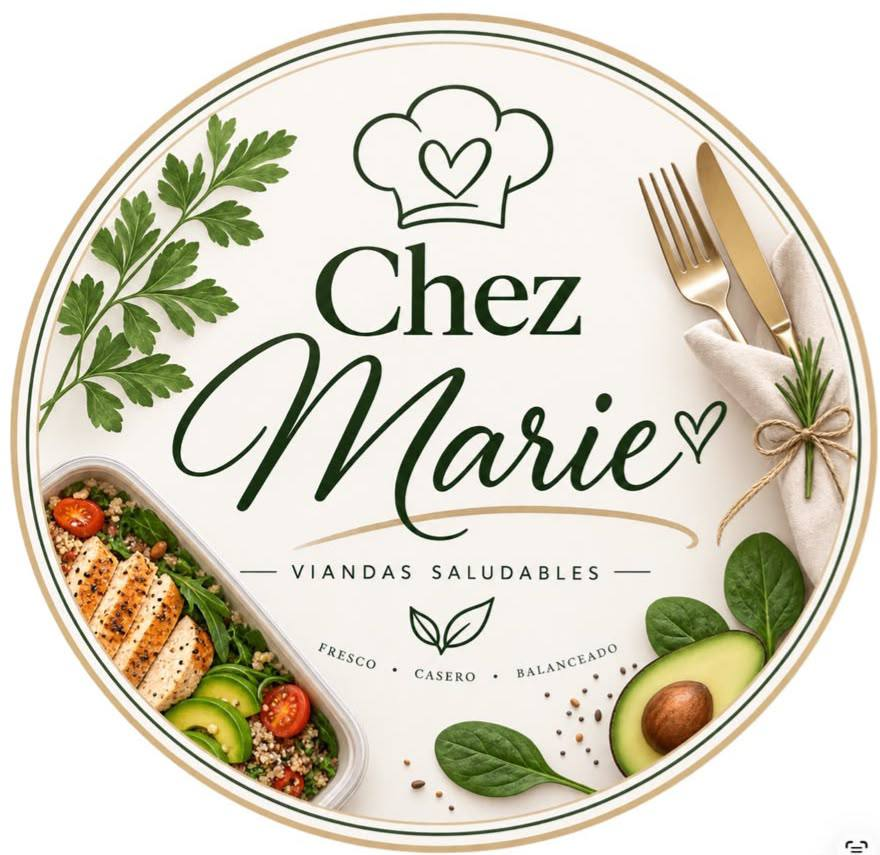

Viandas
Conocé las diferentes opciones de viandas de Chez Marie.
Ver viandas
Fresco, casero y balanceado.
Chez Marie es un emprendimiento dedicado a la elaboración de opciones de comida saludable, pensado para quienes buscan una alimentación práctica, fresca y equilibrada.
Su propuesta ofrece diferentes alternativas de viandas y shots, elaboradas para facilitar el acceso a opciones saludables para el día a día
Conocé las diferentes opciones de viandas de Chez Marie.
Ver viandasDescubrí las opciones de shots de Chez Marie.
Ver shotsPara realizar consultas y conocer más sobre Chez Marie, podés comunicarte a través de sus redes.